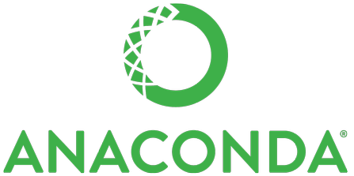

A Big Job Change
I recently changed jobs, and now I am an Engineering Manager for OSS at Anaconda!

This is my second major career pivot, and I thought I would share why I decided to make the change. Even though being a Submarine Officer, a Functional Safety Lead, and working on OSS are very different, they share a common thread of leadership and deeply technical engineering. I’m excited to bring these skills into my new role.
Goodbye to Ford
I spent the last 11 years leading Functional Safety at Ford. It was incredibly rewarding to grow from an individual contributor to a manager and eventually to leading a global team dedicated to ensuring Ford vehicles were safe.
While this role let me support Functional Safety Engineers across the company, I started to miss getting hands-on with technical contributions since most of my time was focused on leading the team.
Looking back, there are a couple of things I wish had been different at Ford:
- A strong bias for external talent with executive leadership
- Too much bureaucracy, especially in approval processes
Having a good mix of new talent join an organization is so important because fresh ideas and perspectives can make a big difference. However, in Ford’s software engineering areas, about 90% of the executive leadership roles were filled by people from outside the company. While I wasn’t aiming for higher leadership roles, this clear preference for external hires made it feel like developing and retaining internal talent wasn’t a priority. As you might expect, it took new leaders a while to adapt, and there was a lot of turnover.
On top of that, the approval process for things like hiring and travel was overly complicated. Simple approvals could take months with no feedback. This culture of control slowed everything down. Delegating authority—like giving managers a budget and headcount to work with and holding them accountable—would have made things so much smoother and faster.
The thing I’ll miss most about Ford is the people. I loved collaborating with all the Functional Safety Engineers and everyone else I worked with. I wish them all the best in the future!
Hello Anaconda
I am now an Engineering Manager for Open Source Software at Anaconda, where I lead a team of engineers working on amazing projects like:
...and more!
Over the last seven years, I’ve been contributing to open source projects, especially in Python. Getting the chance to lead a team that does this full-time feels like a dream come true.
One of the things I’m most excited about with these projects is how they help make programming more accessible. BeeWare, for example, makes it possible to create apps for mobile and desktop, and PyScript lets you write Python directly in your web browser. Both tools are fantastic for helping anyone pick up Python, build something useful, and share it with others. Meanwhile, Jupyter and fsspec are key tools for data science, making it easier to analyze diverse datasets and integrate different data sources.
I’m thrilled to have the opportunity to strengthen the open-source communities around these projects, encourage healthier collaboration, and create more value for Python users by connecting these tools with the broader PyData ecosystem.
Comments